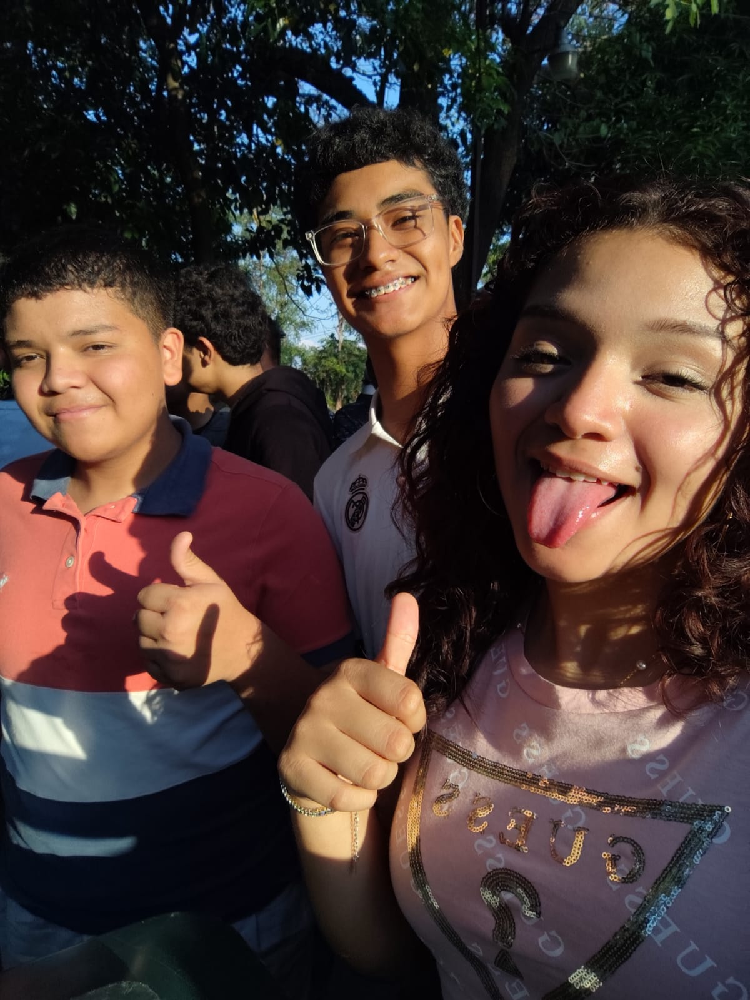
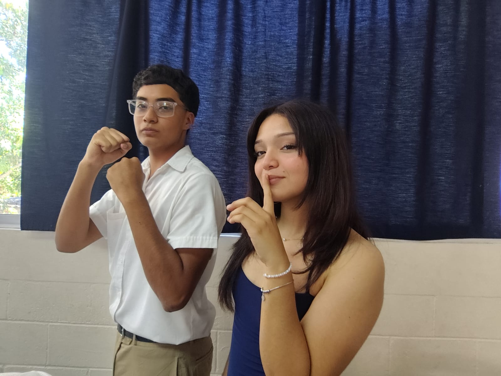
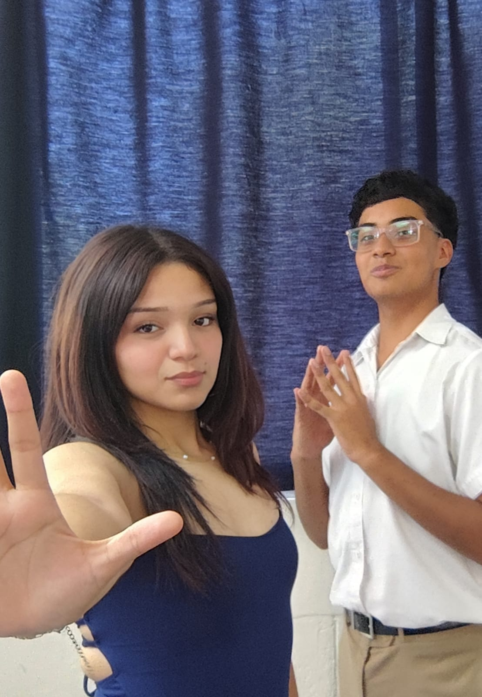
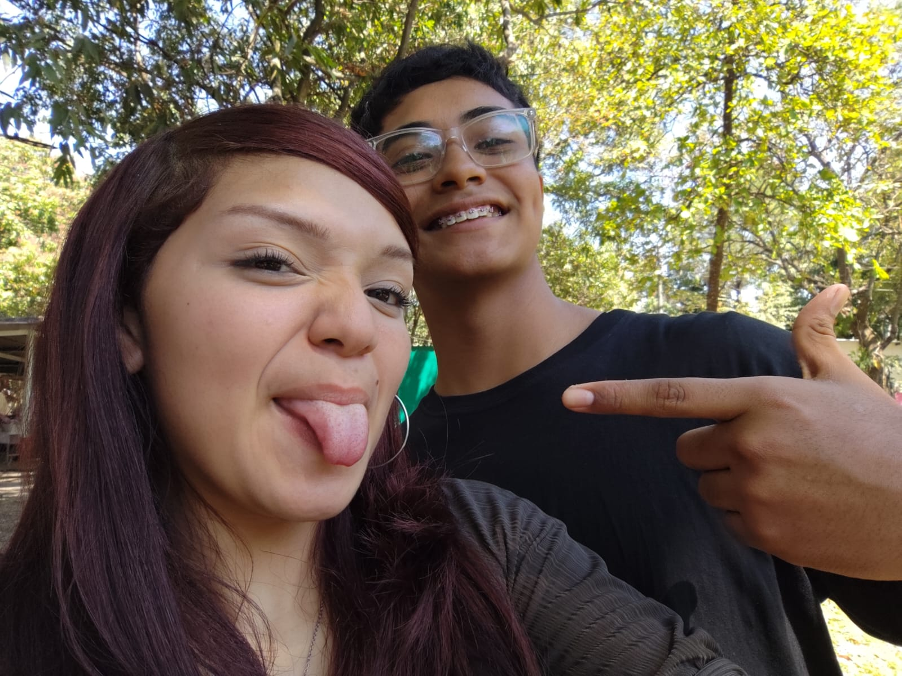
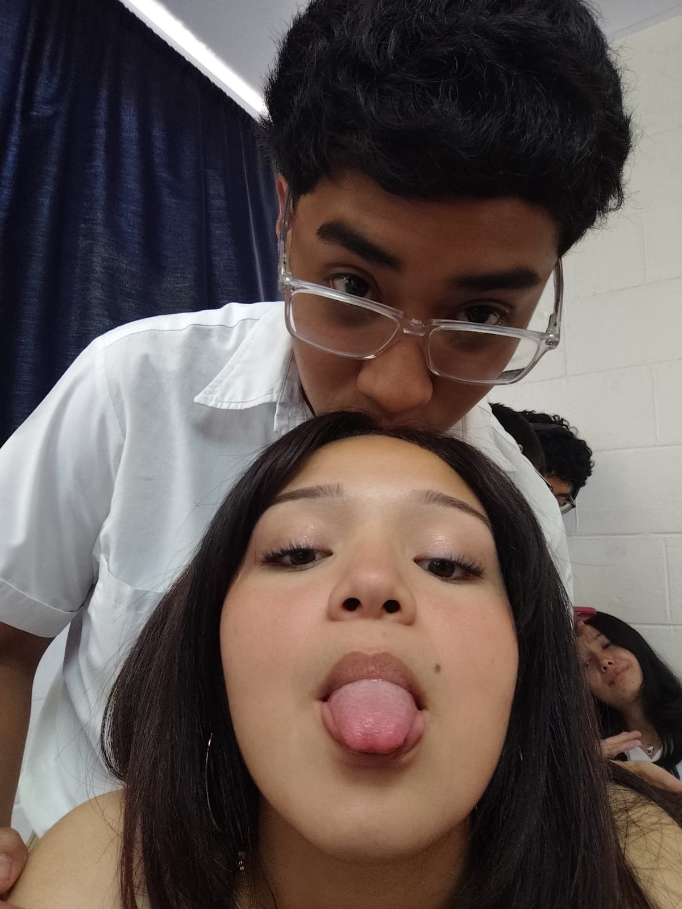
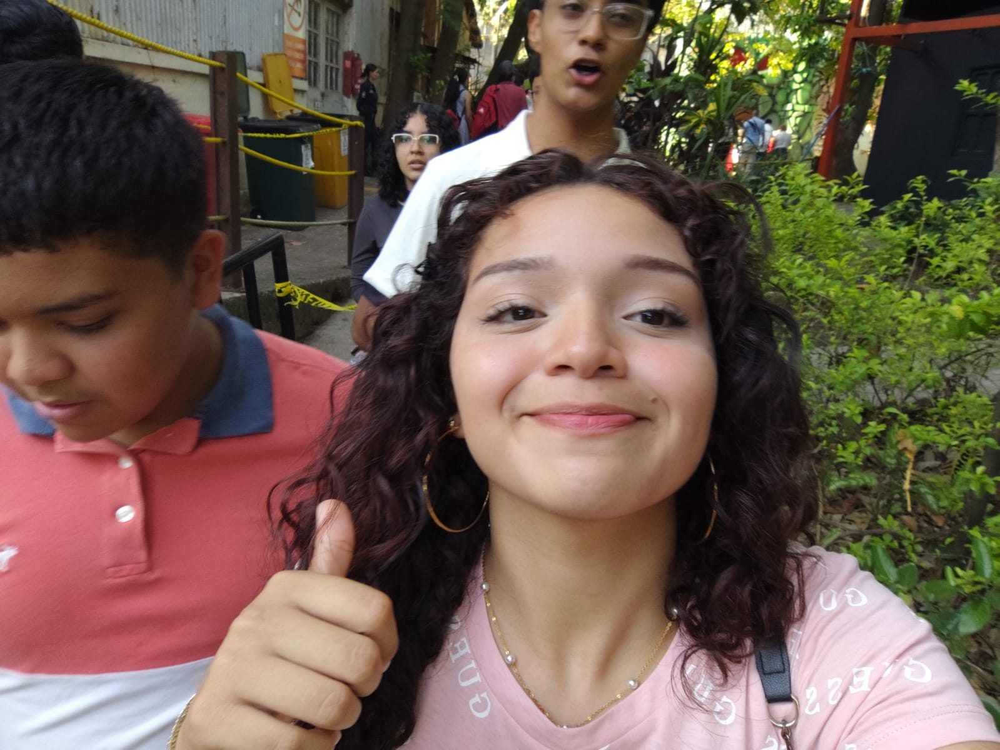

Nunca he tenido quizás la oportunidad de decirte, el porque de mi amor, el porque he intentado tanto y e insistido tanto, pues, si me pongo a enumerar las razones, no termino hoy, entonces, solo te diré algunas de las miles razones que hay para amarte.💝
Una vez te dije que me sentía solo, perdido y con amigos, pero por dentro, me sentía vacía, de una forma terrible, así que hablé con el único que me podía ayudar, le pedí por un cambio, algo que me ayudara a no solo sentirme mejor, sino para ser mejor, como respuesta, Dios te puso en mi camino y a día de hoy, se lo agradezco.
Porque tu forma de ser es esplendida, siento que tenemos una gran química y siento que juntos podemos crecer como pareja y como personas. Porque esta vez quiero hacerlo correctamente y ser aquel afortunado que haga brillar esos ojos y haga sentir amado ese dulce corazón. 💝✨
¿Por qué los pajaritos aparecen y cantan cada vez que estás cerca? Quizás, al igual que yo están destinados a estar junto a usted. 💝🌹🌹
Porque sos mi primer y último pensamiento todos los días...
Todas las mañanas en las que admiro tu sonrisa perfectamente imperfecta, cuando en la frialdad del mundo siento tu calor. Porque necesito tus abrazos cálidos como sol nuevo, que no te vayas tras la puerta y te quedes un rato más junto a mí. 💝
Un rato donde la vida es eterna, donde no existe el miedo, temor u odio, porque estamos compartiendo lo más valioso que Dios nos ha dado, el amor... el cual solo es para usted, mi nucita. 💝


